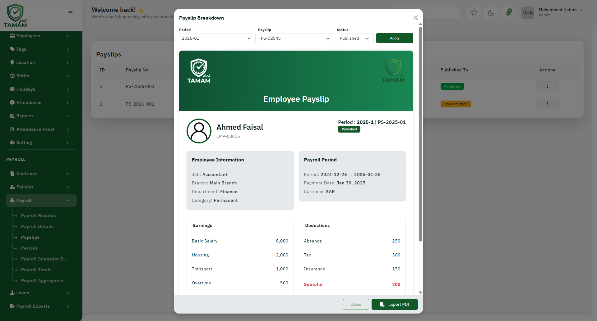

Payslips are official salary documents provided to employees that detail their earnings, deductions, and net pay for a specific period.

About Payslips
A payslip typically includes:
- Employee name, ID, and designation
- Payroll period (start and end dates)
- Breakdown of all earnings
- Breakdown of all deductions
- Gross salary amount
- Total deductions
- Net salary (take-home pay)
- Payment date and method
Accessing Payslips
- Go to Payroll → Payslips
- Select the payroll period
- View list of employees
- Click on employee name to view payslip
- Download or print payslip as needed
Generating Payslips
Payslips are automatically generated when payroll is processed:
- System calculates all earnings and deductions
- Generates PDF payslip for each employee
- Stores payslips in employee records
- Makes payslips available to employees (if self-service enabled)
Payslip Distribution
- Email: Send payslips to employee email
- Print: Print and distribute physically
- Portal: Employee can access via self-service portal
- SMS: Notification that payslip is ready
Customizing Payslips
You can customize payslip templates:
- Add company logo and details
- Include additional information fields
- Customize salary component labels
- Add company policies or messages
- Include employee bank details confirmation
Employee Self-Service
Employees can access their payslips online:
- View current and past payslips
- Download payslips as PDF
- View salary history
- Generate annual salary certificates
Payslip Corrections
If errors are found in a payslip:
- Modify the payroll record before finalization
- Or regenerate payslip if error is discovered after payment
- Create an addendum or correction slip
- Record adjustment in next payroll period
Archiving and Record Keeping
- All payslips are automatically archived
- Maintain at least 7 years as per regulations
- Secure backup of all payslips
- Enable audit trail for all changes
Best Practices
- Verify payslip accuracy before distribution
- Ensure timely payslip distribution
- Maintain consistent payslip format
- Keep payslips confidential
- Archive payslips for minimum 7 years
- Provide payslips in preferred employee language if needed
Tip: Provide easy access to payslips through employee portal to reduce support inquiries and improve employee satisfaction.